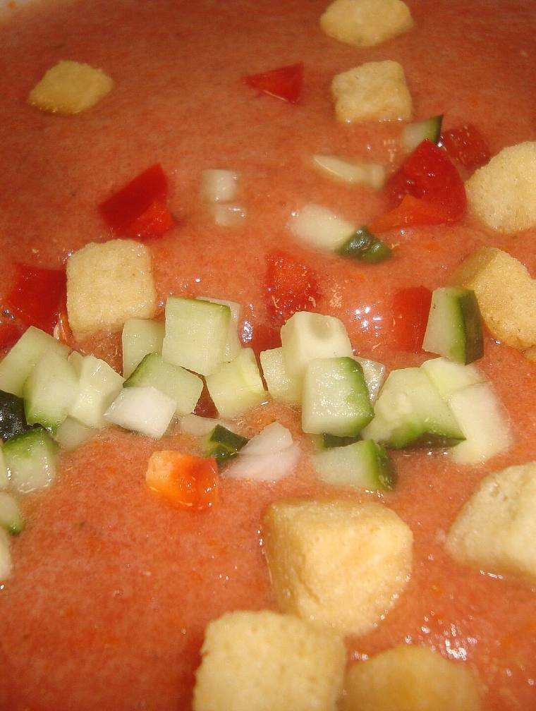

Entrées espagnoles et tapas

Entrées espagnoles et tapas
Gazpacho andaluz
Soupe froide andalouse
Préparation : 20 min
Repos : 2 h
Ingrédients (pour 4 personnes)
- 1 kg de tomates bien mûres
- 2 petits poivrons verts
- 2 gousses d’ail
- 100 g de pain de campagne rassis
- 4 cuillères à soupe d’huile d’olive vierge extra
- 1 cuillère à soupe de vinaigre de Xérès
- eau, sel
- garniture en dés (concombre, oignon, œuf dur, pain)
Quantités adaptées. Les temps de cuisson ne sont pas recalculés.
- Faire tremper le pain.
- Mixer pain, légumes, huile, vinaigre et sel, allonger d’eau à la consistance voulue.
- Réfrigérer 2 heures. Servir en bols, la garniture en dés à part.
D’après Spain.info, office espagnol du tourisme. Traduit et reformulé, repos au froid ajouté.